set.seed(1)
x = 0
for( t in 2:100) x[t] = x[t - 1] + rnorm(1,0,1)
ts.plot(x, lwd = 2)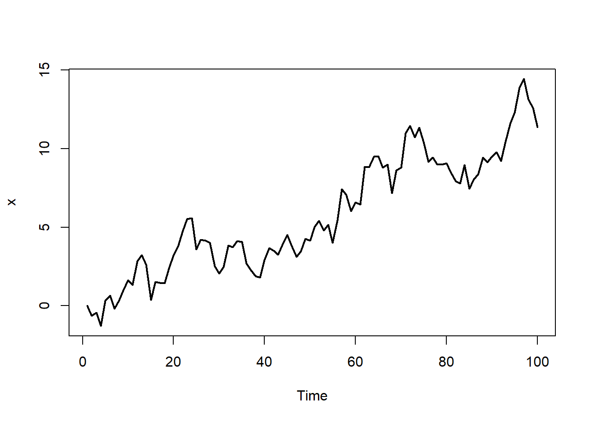
Diz-se que uma série temporal observada possui tendência quando ela exibe um padrão de crescimento ou decrescimento em médio/longo prazo.
A Figure 7.1 mostra a série do número mensal de homicídios, obtida através do SUS. Nela é possível notar uma tendência de crescimento.
url <- 'https://docs.google.com/spreadsheets/d/1NxxKFzTH7TBd3xP9r5qvggHeorJeR5xKIhn_UZwBol0/edit?usp=sharing'
x <- gsheet::gsheet2tbl(url)
hom <- ts( x[,2], start = c(1996,1), frequency=12)
ts.plot(hom, lwd = 2, xlab = 'Ano', ylab = 'No. homicídios')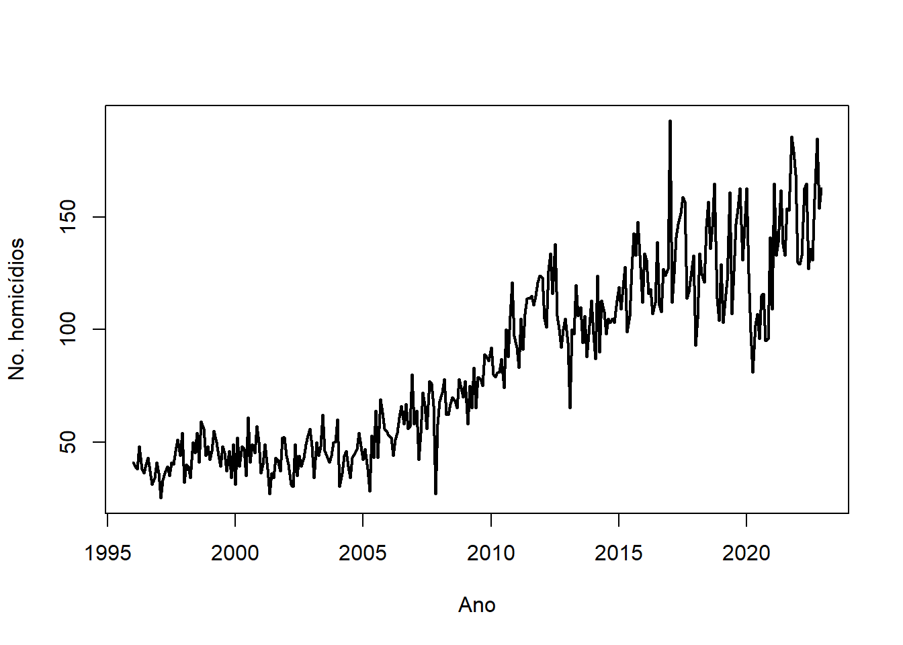
A tendência pode ser de duas naturezas: determinística ou aleatória.
A tendência aleatória é construída ao acaso. Considere, por exemplo, o passeio aleatório definido por
\[\begin{align} x_0&=0\\ x_t &= x_{t-1}+\varepsilon_t,\quad t=1,2,\ldots \end{align}\] onde \(\varepsilon_t\) é um ruído branco gaussiano com \(\nu=1\). Já foi mostrado que \(E(x_t)=0\) e \(Var(x_t)=t\). A figura abaixo apresenta uma série simulada desse processo, com uma semente escolhida de propósito.
set.seed(1)
x = 0
for( t in 2:100) x[t] = x[t - 1] + rnorm(1,0,1)
ts.plot(x, lwd = 2)
Observe que a série exibe uma tendência, mas não há qualquer explicação para a sua existência, uma vez que este comportamento é fruto do acaso. Ainda, teremos que \(E(x_t)=0\), o que torna o padrão observado irrelevante.
Na tendência determinística, existe uma função T(.) que determina seu comportamento. É comum assumir que
\[x_t = T(t) + \varepsilon_t,\] onde \(\varepsilon_t\) é uma série estacionária com média \(0\) e variância \(\nu\). Deste modo, \(E(y_t)=T(t)\), o que implica que \(T(.)\) representa o comportamento médio da série. O problema de estimar \(T(.)\) é denominado suavização.
Na prática, é impossível determinar se uma tendência é aleatória ou determinística, cabendo ao analista procurar se há motivos para acreditar que está analisando o segundo tipo. A partir deste momento, toda tendência será considerada determinística.
Considere que a série temporal foi observada até o tempo \(n\). Então, a tendência é definida como uma função \(T:[1,n]\rightarrow \mathbb{R}\). O Teorema de Weierstrass afirma que, se \(T\) é contínua, então para qualquer \(\delta>0\), existe um polinômio \(u(.)\) tal que \[|T(t)-u(t)|<\delta.\] Isto quer dizer que \(T(.)\) sempre pode ser aproximada por um polinômio. Assim, para determinada ordem \(p\), é correto afirmar que
\[\begin{equation}
x_t = \beta_0 + \sum_{j=1}^p \beta_j t^j + \varepsilon_t
\end{equation}\] onde \(\varepsilon_t\) é uma série estacionária, é um modelo razoável para uma série temporal com tendência.
Assumindo que \(\varepsilon_t\) é um ruído branco gaussiano, tem-se o modelo de tendência polinomial de grau \(p\).
Fazendo \(\boldsymbol{f}_t'=(1,t,\ldots,t^p)\) , o modelo de tendência polinomial é reescrito como \[\boldsymbol{x}=\boldsymbol{F}'\boldsymbol{\beta}+\boldsymbol{\varepsilon}\] e inferências sobre \(\boldsymbol{\beta}\) e \(\nu\) são feitas utilizando o modelo linear tradicional.
Example 7.1 Considere o número anual de nascidos vivos no estado do Amazonas entre os anos 2000 e 2013:
x <- c( 67646 , 70252 , 70671 , 70751 , 71345 ,
73488 , 75584 , 73469 , 75030 , 75729 ,
74188 , 76202 , 77434 , 79041)
nascidos <- ts(x, start =2000)ts.plot(nascidos, lwd = 2, ylab = 'No. nascidos vivos')
stats::acf(nascidos)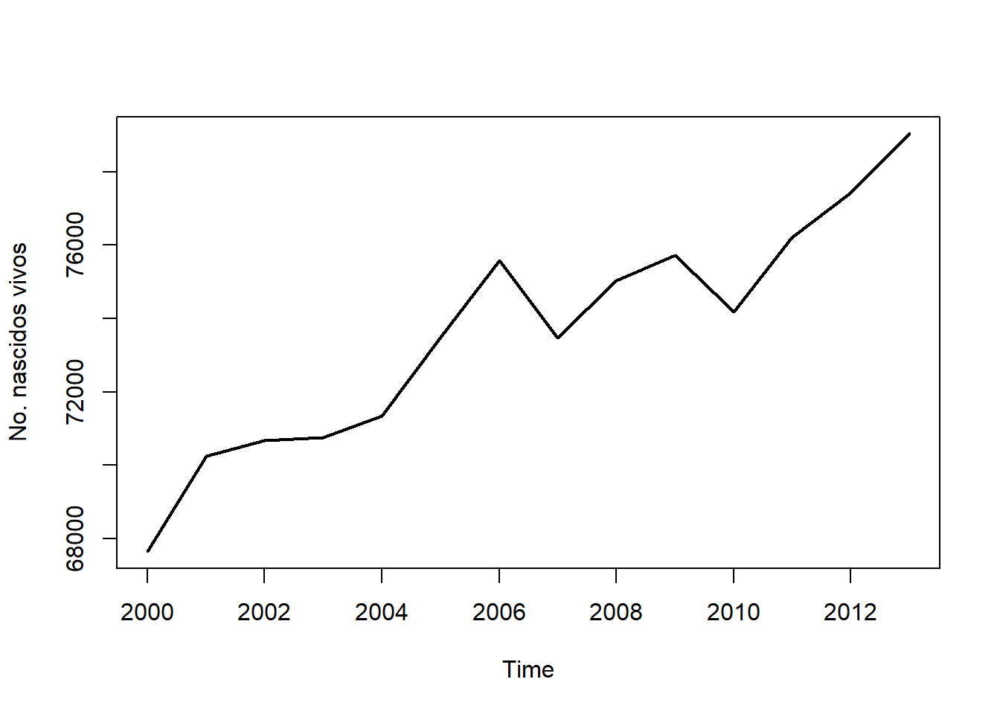
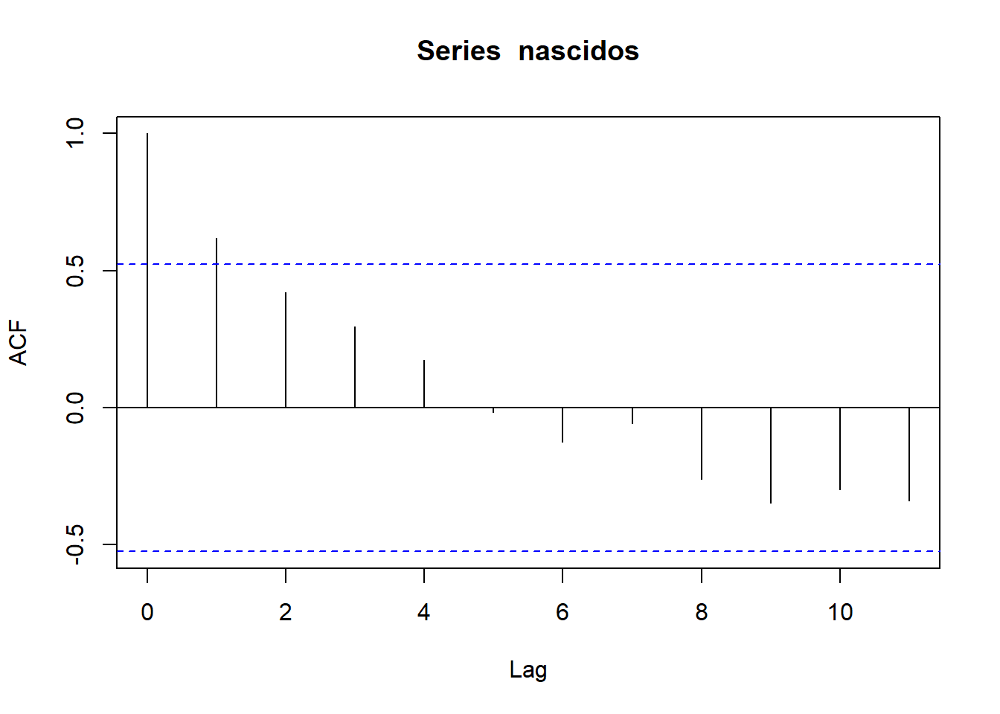
Vamos ajustar um modelo de tendência polinomial de ordem 1, ou seja
\[x_t=\beta_0+\beta_1 t + \varepsilon_t\] Os índices do tempo que formam a regressora são extraídos diretamente do objeto:
tempo <- time(nascidos)
tempoTime Series:
Start = 2000
End = 2013
Frequency = 1
[1] 2000 2001 2002 2003 2004 2005 2006 2007 2008 2009 2010 2011 2012 2013Abaixo ajustamos o modelo utilizando a função poly, que cria um polinômio. O argumento raw=TRUE cria um polinômio usual, enquanto que raw=FALSE (o padrão) cria um polinômio ortogonal.
mod <- lm( nascidos ~ poly(tempo, 1, raw = TRUE))As estimativas de máxima verossimilhança para \(\beta_0\) e \(\beta_1\) são:
mod$coefficients (Intercept) poly(tempo, 1, raw = TRUE)
-1361373.987 715.178 ou seja, \[\hat{T}(t)=\hat{\beta}_0+\hat{\beta}_1 t = -1.361.373+715 t\] Os resíduos do modelo linear mod podem ser obtidos via função residuals. Abaixo, verificamos que a série dos resíduos oscila em torno de zero e que nenhuma autocorrelação parece ser relevante, o que dá indícios de que os erros são um ruído branco.
res <- residuals(mod)
ts.plot( res, main = '', ylab='Resíduos')
acf(res, main = '')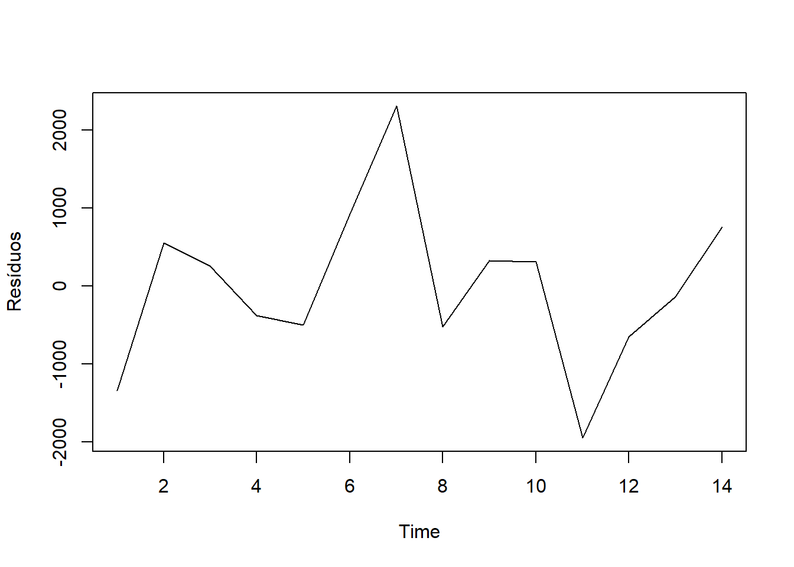
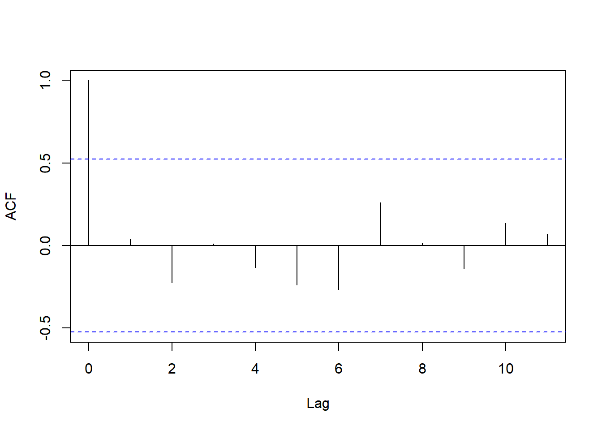
Abaixo, o teste de Shapiro-Wilks não gera evidências contra a suposição de normalidade e o teste de Box-Pierce não gera evidências contra a hipótese de ruído branco.
shapiro.test(res)
Shapiro-Wilk normality test
data: res
W = 0.96982, p-value = 0.8743Box.test(res)
Box-Pierce test
data: res
X-squared = 0.02156, df = 1, p-value = 0.8833É interessante notar que, para \(t=1,\ldots,14\), \[\hat{T}(t)=\hat{\beta}_0+\hat{\beta}_1 t = \hat{y}_t,\] logo, os valores preditos do modelo são uma estimativa para a tendência nos pontos observados.
ts.plot( cbind( nascidos, fitted(mod)), col = 1:2, lwd = 2)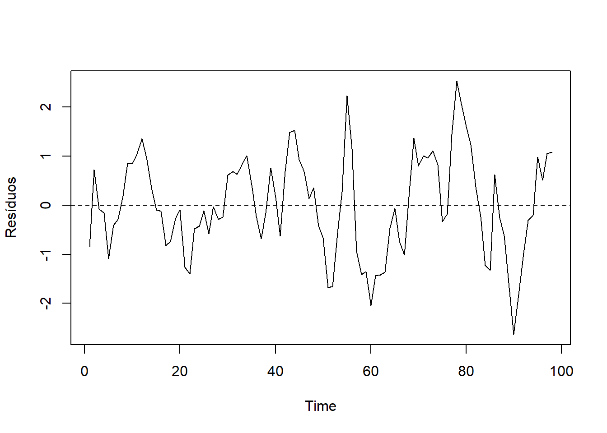
A previsão é realizada utilizando o modelo ajustado, extrapolando para um tempo não observado. Por exemplo a estimativa para 2014 é
\[\hat{T}(15)=\hat{\beta}_0+\hat{\beta}_1 2014 = 78.636\] (o valor real foi 81.145).
É importante ressaltar que esse tipo de modelo é interessante para fazer inferências sobre a tendência, mas pode ser inadequado para previsões, uma vez que o polinômio é uma aproximação apenas para o intervalo observado.
O valor do Critério de Informação de Akaike (AIC) é dado por \(-2\log L(\hat{\theta})+2k\) onde \(L\) é a função de verossimilhança e \(\hat{\theta}\) e \(k\) são o estimador de máxima verossimilhança para \(\theta\) e sua dimensão, respectivamente. O modelo com menor AIC é considerado mais adequado.
Example 7.2 Considere o nível anual, em pés, do Lago Huron. Essa série já vem carregada no R sob o nome LakeHuron.
ts.plot(LakeHuron, lwd = 2, ylab = 'Nível (pés)')
stats::acf(LakeHuron)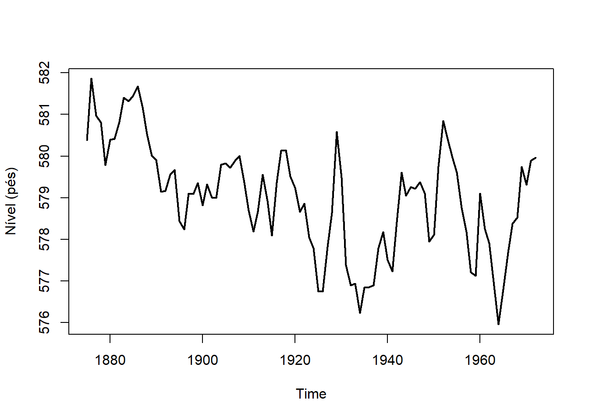
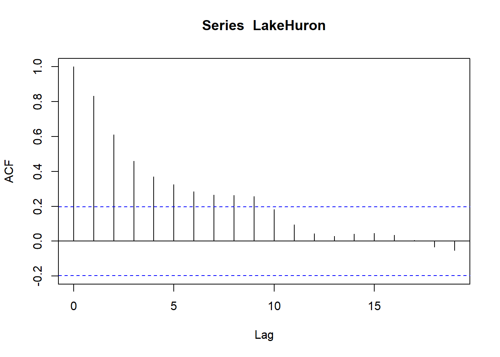
Ao ajustar os modelos lineares até a ordem 6 e calcular a Informação de Akaike através da função AIC, obtivemos o melhor ajuste com \(p=2\). Apresentamos os códigos utilizados abaixo.
p <- 2 # ordem do polinômio
tempo <- time(LakeHuron)
mod <- lm( LakeHuron ~ poly(tempo, p, raw = TRUE ))
AIC(mod)[1] 287.8407coefficients(mod) (Intercept) poly(tempo, p, raw = TRUE)1
3.124158e+03 -2.622739e+00
poly(tempo, p, raw = TRUE)2
6.754713e-04 O model ajustado é \[\hat{T}(t) = 3.124 -2,6 t + 0,0006 t^2\]
Abaixo, apresentamos a análise de resíduos desse modelo.
ts.plot( res, main = '', ylab='Resíduos')
abline(h = 0, lty = 2)
acf(res, main = '')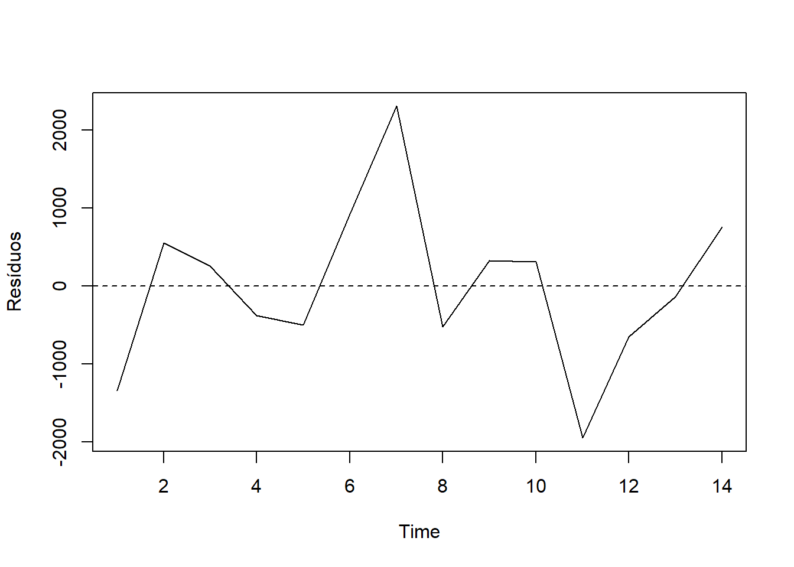

Os resíduos parecem oscilar em torno de zero com uma variância constante, mas o correlograma sugere que não temos um ruído branco. O teste de Box-Pierce, dado abaixo, confirma a nossa suspeita. Deste modo, este modelo não é adequado.
Box.test(res)
Box-Pierce test
data: res
X-squared = 0.02156, df = 1, p-value = 0.8833Por último, apresentamos a série temporal com a tendência estimada.
ts.plot( cbind(LakeHuron, fitted(mod)), col=c(1,'purple'),lwd = 2)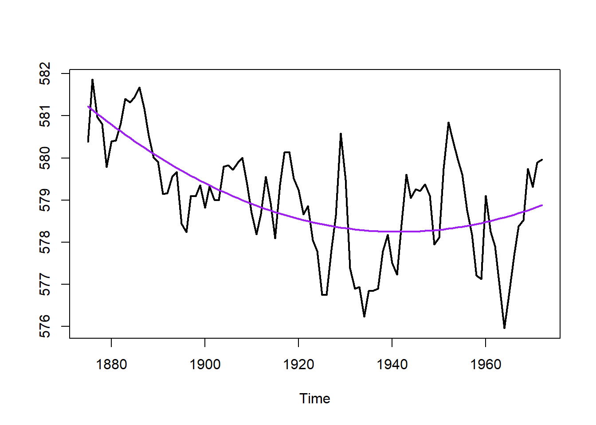
O modelo de regressão polinomial tem a desvantagem de depender de um ruído branco. Os métodos não paramétricos independem da distribuição do ruído, sendo úteis para a análise exploratória.
O método das médias móveis consiste em obter \(\hat{T}(t)\) através da média da série considerando uma janela contendo \(x_t\). Para o tempo \(t\) e \(m=2h+1\), com \(h=1,2,\ldots\), considere o conjunto \[\mathcal{V}(m)_t=\{t-h,\ldots,t+h\},\] que representa uma janela de tempo centrada em \(t\) com \(m\) elementos. A média móvel de ordem \(m\) (notação \(m\)-MM) é dada por \[\hat{T}_h(t)=\frac{1}{m}\sum_{ i = t-h}^{t+h}x_i,\;h<t<n-h.\]
Para compreender melhor esse estimador, considere que a relação entre pontos dentro de uma janela é aproximadamente linear, ou seja, para qualquer \(i\in\mathcal{V}(m)_t\) existem \(a_\mathcal{V}\) e \(b_\mathcal{V}\) tais que \[x_i\approx a_\mathcal{V}+b_\mathcal{V}i+\varepsilon_i,\] onde \(\varepsilon_i\) é considerado um ruido estacionário. Então \[\begin{align}E(\hat{T}_h(t))&\approx\frac{a_\mathcal{V}+b_\mathcal{V}(t-h)+\cdots+a_\mathcal{V}+b_\mathcal{V}t+\cdots+a_\mathcal{V}+b_\mathcal{V}(t+h)}{m}\\&=a_\mathcal{V}+b_\mathcal{V}t\end{align}\] e \[\begin{align} Var(\hat{T}_h(t))&=\text{Cov}\left(\frac{1}{m}\sum_{ i = t-h}^{t+h}x_i,\frac{1}{m}\sum_{ j = t-h}^{t+h}x_j\right)\\&=\frac{1}{m^2}\sum_{ i = t-h}^{t+h}\sum_{ j = t-h}^{t+h}\text{Cov}\left(x_i,x_j\right)\approx\frac{1}{m^2}\sum_{ i = t-h}^{t+h}\sum_{ j = t-h}^{t+h}\text{Cov}\left(\varepsilon_i,\varepsilon_j\right)\\&=\frac{1}{m^2}\sum_{ i = t-h}^{t+h}\sum_{ j = t-h}^{t+h}\gamma(j-i)=\frac{1}{m^2}\left[m\nu+2\sum_{j=1}^{2h}(m-j)\gamma(j)\right]\\&=\frac{\nu}{m}+\frac{2}{m}\sum_{j=1}^{2h}\left(1-\frac{j}{m}\right)\gamma(j),\end{align}\] onde \(\gamma(j)\) é a função de autocovariância dos ruídos. Observe que:
como \(T(.)\) é determinística e os ruídos são estacionários, então \(Var(\hat{T}_h(t))\) converge para zero quando \(m\rightarrow \infty\) (\(m\) grande desejável)
\(T_h(.)\) é localmente linear, logo \(\hat{T}\) é um estimador razoável para valores baixos de \(h\) (\(m\) baixo desejável)
Este é um exemplo típico de trade off entre vício e variância, onde não é possível minimizar os dois simultaneamente.
Utilizaremos a função ma(x,m), do pacote forecast para encontrar \(m-\)MM para a série x
Example 7.3 Abaixo, apresentamos a série anual histórica de nascidos vivos no Amazonas desde 1994 até 2021.
x <- c(47780, 47966, 49112, 56070, 57180, 62037,
67646, 70252, 70671, 70751, 71345, 73488, 75584,
73469, 75030, 75729, 74188, 76202, 77434, 79041,
81145, 80097, 76703, 78066, 78087, 77622, 75635,
78454)
nascidos <- ts(x, start =1994)
ts.plot(nascidos, lwd = 2, ylab = 'No. nascidos vivos')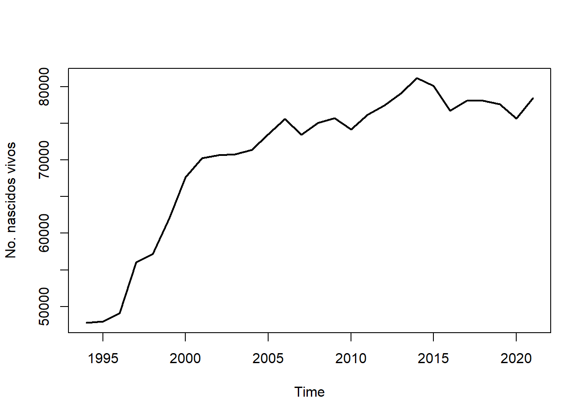
library(forecast)
oo <- par( mfrow = c(2,2), mar = c(2,2,1,1))
ts.plot(nascidos, lwd = 2, ylab = 'No. nascidos vivos')
lines( ma(nascidos,3) , col =2, lwd = 2)
legend('bottomright', legend = c('Série original','3-MM'), fill = c(1,2,3), bty='n')
ts.plot(nascidos, lwd = 2, ylab = 'No. nascidos vivos')
lines( ma(nascidos,5) , col =2, lwd = 2)
legend('bottomright', legend = c('Série original','5-MM'), fill = c(1,2,3), bty='n')
ts.plot(nascidos, lwd = 2, ylab = 'No. nascidos vivos')
lines( ma(nascidos,7) , col =2, lwd = 2)
legend('bottomright', legend = c('Série original','7-MM'), fill = c(1,2,3), bty='n')
ts.plot(nascidos, lwd = 2, ylab = 'No. nascidos vivos')
lines( ma(nascidos,9) , col =2, lwd = 2)
legend('bottomright', legend = c('Série original','9-MM'), fill = c(1,2,3), bty='n')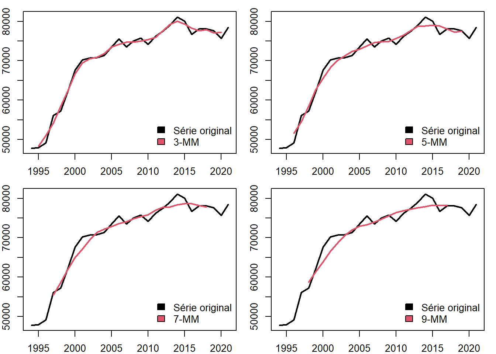
par(oo)Considere a estimativa obtida pela média móvel de ordem 3.
tendencia <- ma(nascidos, 3)Vamos estimar o ruído da série (e eliminar as coordenadas vazias)
ruido <- nascidos - tendencia
ruido <- ruido[is.na(ruido) == F]Abaixo, apresentamos as principais estatísticas sobre os resíduos. A série histórica dos resíduos oscila em torno de zero e não há motivos para suspeitar de que sua variância não seja constante. O correlograma apresenta autocorrelações baixas, como o esperado em um ruído branco. O teste de Shapiro-Wilk não dá evidências contra normalidade, o que suporta a hipótese de ruído branco gaussiano. O teste de Box-Pierce apresenta um p-valor de 0,04 e, em conjunto com as demais evidências, vamos considerá-lo significativo ao nível de 4%.
ts.plot(ruido)
abline( h = 0, lty = 2)
abline( h = 2*sd(ruido), lty=2)
abline( h = -2*sd(ruido), lty=2)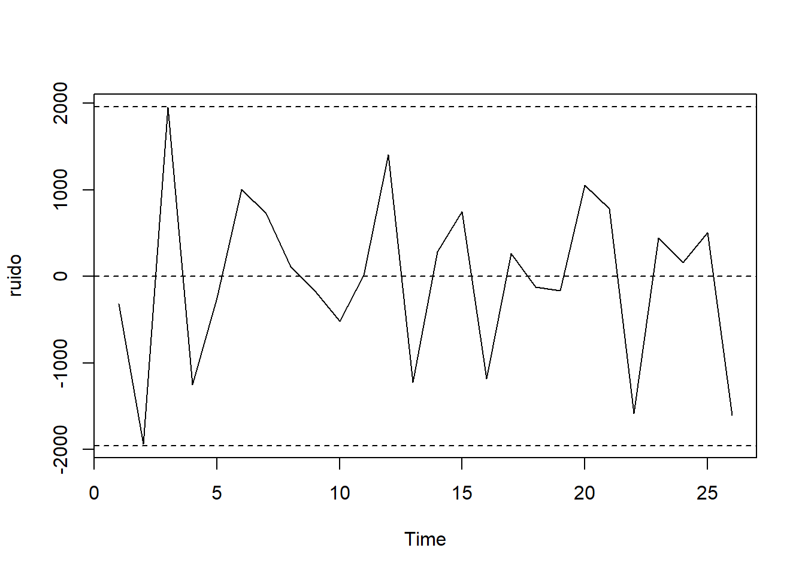
acf(ruido)
shapiro.test(ruido)
Shapiro-Wilk normality test
data: ruido
W = 0.9711, p-value = 0.6521Box.test(ruido)
Box-Pierce test
data: ruido
X-squared = 4.1804, df = 1, p-value = 0.04089\(\blacksquare\)
Até o momento, foi considerado que a ordem da média móvel é escrita como \(m=2h+1\), ou seja, a ordem é sempre ímpar. Para ilustrar como definir a média móvel para uma ordem par, sem perda de generalidade assuma que \(m=4\). Como não é possível escolher uma janela de tempo centrada em \(t\) com 4 elementos, tem-se duas possibilidades para \(\mathcal{V}(4)_t\): \[\mathcal{V}'(4)_t=\{t-1,t,t+1,t+2\}\] que representa uma janela com mais tempos à direita de \(t\) e \[\mathcal{V}''(4)_t=\{t-2,t-1,t,t+1\},\] que representa uma janela com mais tempos à esquerda de \(t\). Para cada possibilidade, têm-se as seguintes estimativas \[\hat{T}'_h(t)=\frac{1}{4}\sum_{i=t-1}^{t+2}x_{i}\] e \[\hat{T}_h''(t)=\frac{1}{4}\sum_{i=t-2}^{t+1}x_{i}.\] A média móvel 4-MM será definida por \[\hat{T}_h(t)=\frac{\hat{T}_h'(t)+\hat{T}_h''(t)}{2}\] Observe que a média agora é ponderada, uma vez que
\[\hat{T}_h(t)=\frac{x_{t-2}}{8}+\frac{x_{t-1}}{4}+\frac{x_{t}}{4}+\frac{x_{t+1}}{4}+\frac{x_{t+2}}{8}.\]
Para o caso geral \(m=2h\) com \(h=1,2,\ldots\), define-se \(m\)-MM por \[\begin{align}\hat{T}_h(t)&=\frac{1}{2}\left[\frac{1}{m}\sum_{i=t-h}^{t+h-1}x_i+\frac{1}{m}\sum_{i=t-h+1}^{t+h}x_i\right]\\&=\frac{x_{t-h}}{2m}+\frac{1}{m}\sum_{i=t-h+1}^{t+h-1}x_i+\frac{x_{t+h}}{2m}.\end{align}\]
O estimador para tendência conhecido como média móvel ponderada de ordem \(m\) é dado por
\[\hat{T}(t)=\sum_{i=t-h}^{t+h} w_i x_{i},\] com \(w_i>0\), \(w_{t-j}=w_{t+j}\) e \(\sum_{i=t-h}^{t+h}w_i=1\). O método tradicional é obtido fazendo \(w_i=1/m\).
Por último, como as primeiras e últimas observações são removidas, esses métodos não são os mais recomendados.
Outras médias móveis
É importante ressaltar que os métodos estatísticos são ferramentas universais e que geralmente sofrem modificações ao serem aplicados em outras áreas. Deste modo, existem outras definições de médias móveis que podem causar confusão.
Em epidemiologia, por exemplo, a média móvel de ordem \(m\) é definida por \[\hat{T}(t)=\frac{1}{m}\sum_{j=1}^m x_{t-j+1}\] ou seja, a soma dos valores mais recentes em relação à \(t\). Observe que o contexto é diferente: em uma epidemia por exemplo, deseja-se estimar \(T(t)\) onde \(t\) é o tempo mais recente e, em geral, se utiliza o 7-MM tirando a média dos últimos 7 dias. A mesma lógica vale para o mercado financeiro, que tira a média dos últimos 5 dias de preço de fechamento.
Ainda no mercado financeiro, o importante é captar a mudança da tendência o mais rápido possível. Deste modo, utiliza-se uma média móvel ponderada definida por \[\hat{T}(t)=\frac{2}{m(m+1)}\sum_{j=1}^m(m-j+1)x_{t-j+1}.\] Na definição acima, o último preço da ação, dado por \(x_t\), é o valor mais importante e por isso recebe o maior peso. Note que os pesos não são simétricos.
No método de suavização do gráfico de dispersão, deseja-se estimar \(f(x)=E(y|x)\), através da coleção \((y_1,x_1),\ldots,(y_n,x_n)\), para um valor qualquer de \(x\). A estimativa \(\hat{f}\) para o ponto \(x'\) é calculada considerando os seguintes passos:
Fixe um valor inteiro positivo \(q\leq n\).
Dentro do conjunto \(x_1,\ldots,x_n,\) encontre os \(q\) valores mais próximos de \(x'\) (via distância euclidiana). Denote este conjunto por \(\mathcal{V}\) e denote por \(d\) a maior distância encontrada.
Para cada \(x_1,\ldots,x_n\) seja \[v_j(x')=\left\{\begin{array}{ll}\left(1-\left| \frac{x_j-x'}{d}\right|^3\right)^3&,\;\;\hbox{se }|x_j-x'|\leq d\\ 0,&\hbox{caso contrário}\end{array}\right.\] o peso associado à \(x_j\) (valores próximos de \(x'\) receberão o peso máximo e valores afastados recebem menor peso)
Ajuste o modelo de regressão ponderado, minimizando \[\sum_{i=1}^n v_i(x')\left(y_i - \sum_{j=0}^p \beta_jx^j_i\right)^2\]
Estime \(f(x')\) por \[\hat{f}(x')=\sum_{j=0}^p \hat{\beta}_j(x')^j \]
Observe que este método pode ser utilizado para estimar a tendência da série. Abaixo, vamos analisar a série de taxa de desemprego mensal, entre março de 2002 e dezembro de 2015.
url <- 'https://www.dropbox.com/s/rmgymzsic99qawd/desemprego.csv?dl=1'
banco <- read.csv(url, sep = ';', header = FALSE)
desemprego<- ts( banco$V2, start = c(2002,3), frequency=12)
ts.plot(desemprego, ylab = 'Taxa de desemprego')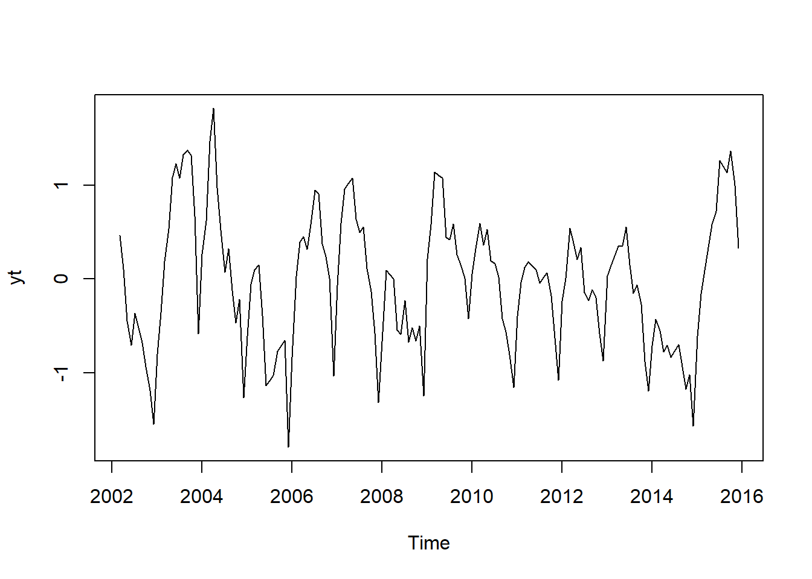
acf(desemprego, lag = 30)
Vamos estimar a tendência
# criando a variável regressora
tempo <- 1 : length(desemprego)
# aplicando o loess
lw <- loess( desemprego ~ tempo)
# transformando o valor predito em uma série temporal
fit <- ts(lw$fitted, start = start(desemprego), frequency = frequency(desemprego) )
# gráfico da tendência estimada
ts.plot( desemprego, ylab = 'Taxa de desemprego' , lwd = 2)
lines(fit, lwd = 2, col = 'tomato')
legend('topright', c('Observado','Ajustado'),fill=c(1,'tomato'), bty='n')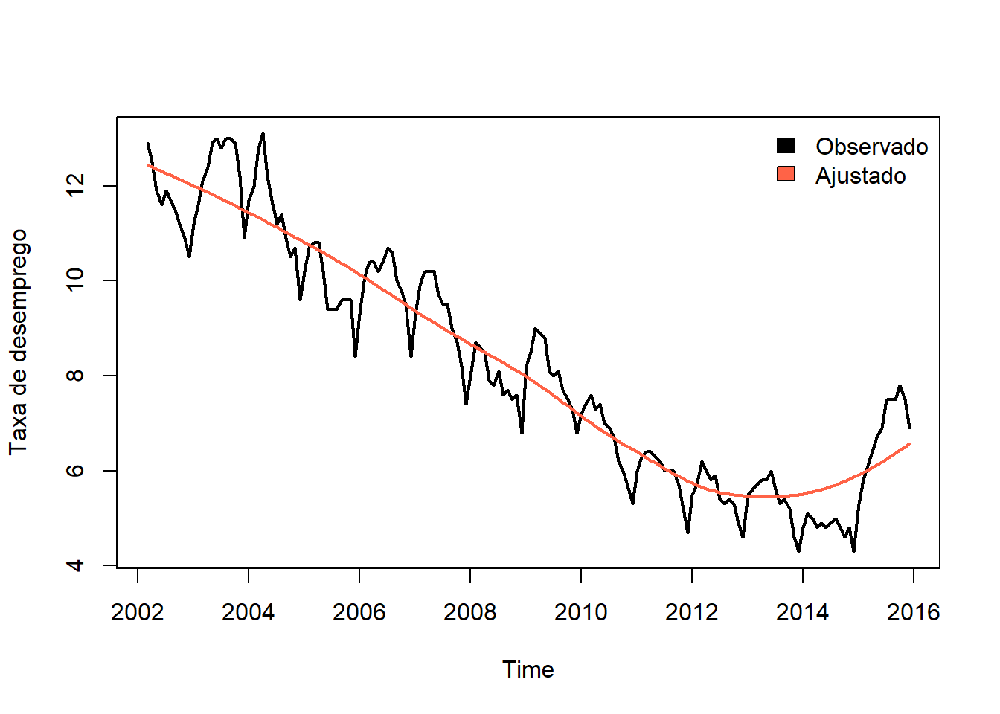
Vamos eliminar a tendência estimada e avaliar o restante.
yt <- desemprego - fit
ts.plot(yt)
acf(yt)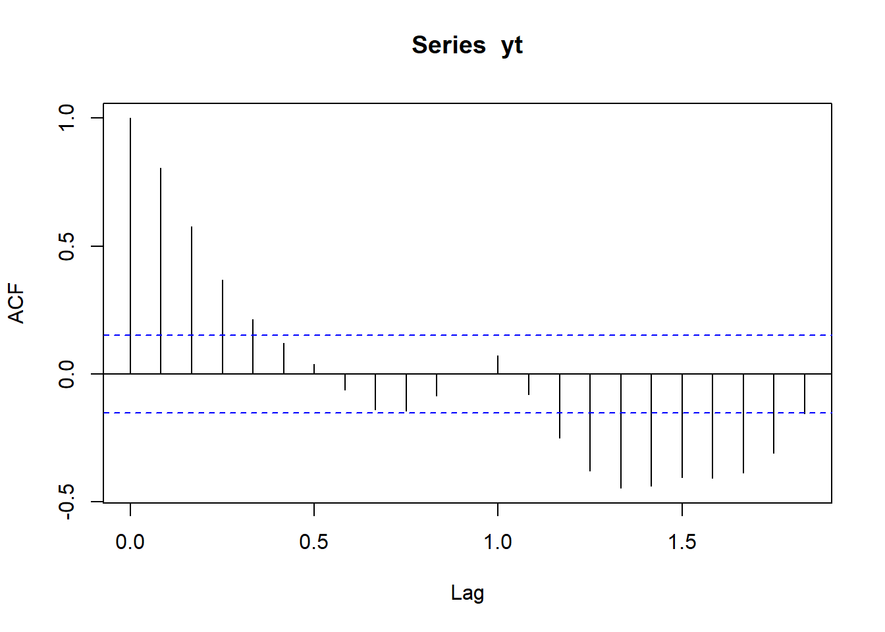
Fica claro a existência de mais sinais, o que implica que o restante não é uma série estacionária.
Os métodos de modelagem polinomial, médias móveis e LOESS apresentados anteriormente compartilham um objetivo comum: estimar a curva de tendência determinística \(T(t)\) por meio de diferentes técnicas de suavização. No entanto, em diversas aplicações de séries temporais, o interesse reside não em descrever a tendência, mas sim em removê-la para obter uma série sem esse padrão. Uma alternativa puramente algébrica, robusta e que dispensa a estimação direta de parâmetros para essa finalidade é a diferenciação.
A diferenciação de uma série é defina por \[\Delta x_t=x_t-x_{t-1},\] onde \(\Delta\) é denominado operador diferença. Trata-se de um operadpor linear, ou seja, para duas séries temporais \(\{x_t\}\) e \(\{y_t\}\) e duas constantes \(a\) e \(b\), temos que \(\Delta(ax_t+by_t)=a\Delta x_t+b\Delta y_t.\)
Utilizamos potências para indicar que o operador foi utilizado diversas vezes. Por exemplo, uma série diferenciada duas vezes é dada por \[\begin{align}\Delta^2x_t&=\Delta(\Delta x_t)=\Delta(x_t-x_{t-1})\\&=\Delta x_t-\Delta x_{t-1}=x_t-2x_{t-1}+x_{t-2}.\end{align}\]
Agora, considere novamente o passeio aleatório definido por
\[\begin{align} x_t &= x_{t-1}+\varepsilon_t,\quad t=1,2,\ldots \end{align}\] onde \(\varepsilon_t\) é um ruído branco. Vimos que esse processo pode produzir tendências aleatórias. Seja \(\{y_t\}\) a série obtida após a diferenciação de \(\{x_t\}\). Observe que
\[y_t=\Delta x_t=x_t-x_{t-1}=\varepsilon_t\] logo \(\{y_t\}\) é um ruído branco, ou ainda, uma série sem tendência.
Considere então que, \[x_t=a+bt+\varepsilon_t,\] onde \(\varepsilon_t\) é um ruído branco. Observe que \[y_t=\Delta x_t= b+ \varepsilon_t,\] logo, \(\{y_t\}\) é uma série estacionária e, portanto, sem tendência. De fato, com as séries com tendência tendem a ser localmente lineares, a diferenciação em geral resulta na sua eliminação.
Example 7.4 Considere novamente a série anual do nível do Lago Huron. Vamos utilizar a função diff para fazer uma diferença na série. Os gráficos da série original e da diferenciada são apresentados abaixo. Observe que a série diferenciada não apresenta tendências, oscilnando em torno de zero.
Diferença = diff(LakeHuron)
series = ts.union(LakeHuron, Diferença)
plot.ts(series, main = '')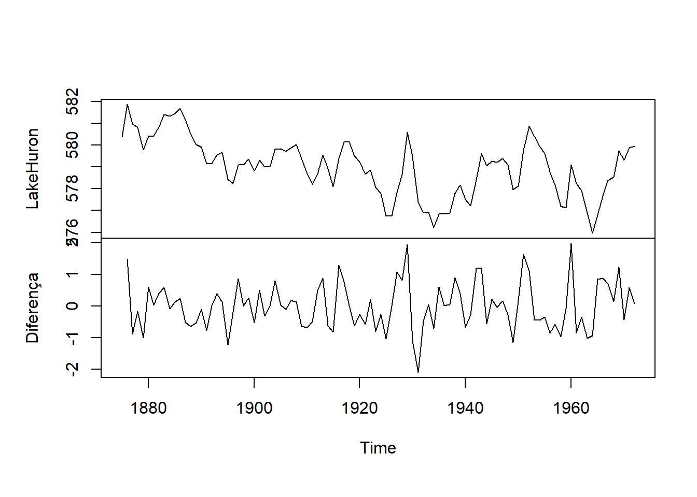
Abaixo, apresentamos o correlograma da série diferenciada, que apresenta um comportamento típico de ruído branco. O teste de Box-Pierce não rejeita a hipótese de ruído branco (p=0,1939), enquanto que o teste de Shapiro-Wilk não rejeita normalidade (p=0,1957). Portanto, existem evidências de que a série é composta por uma tendência e um ruído branco gaussiano.
acf(Diferença, main='Série diferenciada')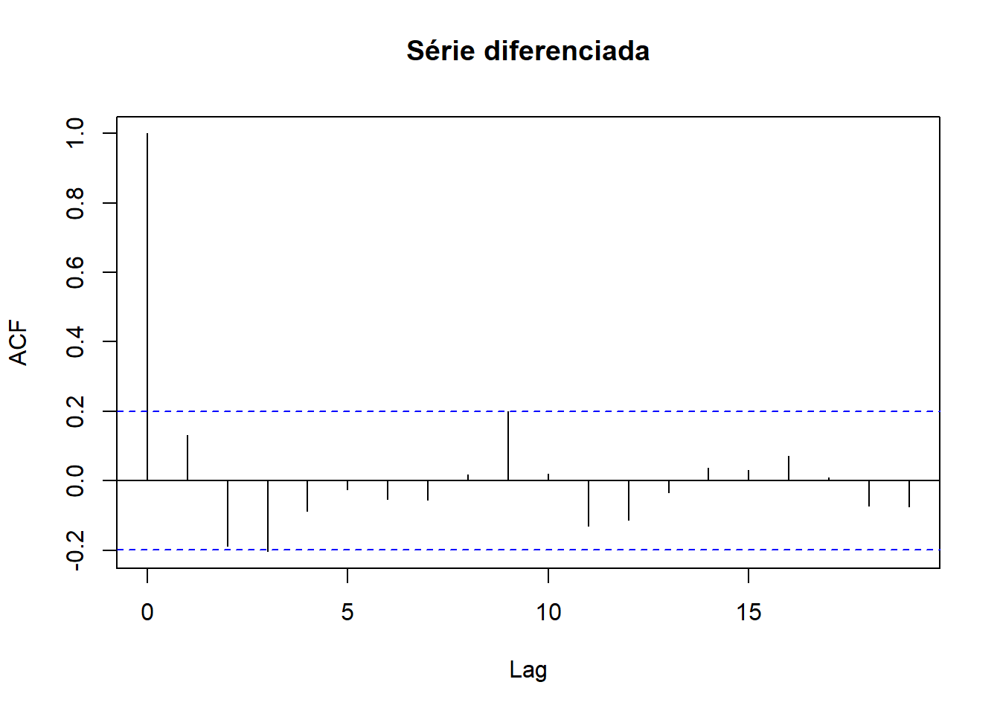
O processo de diferenciação serve para eliminar a tendência, e não para estimá-la diretamente. Contudo, é perfeitamente possível realizar previsões para a série original a partir de sua versão diferenciada. Seja \(\{x_t\}\) uma série que exibe tendência e seja \(y_t=\Delta x_t\) a sua primeira diferença. Suponha ainda que \(\{y_t\}\) é estacionária, com média constante \(E(y_t) = \mu\) e variância \(\nu\). A função de previsão para a série original \(\{x_t\}\) em um horizonte de tempo \(h > 0\), condicionada ao conjunto de informações disponíveis até o tempo \(t\) (denotado por \(\mathcal{D}_t\)), é dada pela esperança condicional \(E(x_{t+h}|\mathcal{D}_t)\).
Para o primeiro passo à frente (\(h = 1\)), temos: \[\begin{align} \mu &= E(y_{t+1}|\mathcal{D}t) \\ \mu &= E(x_{t+1} - x_t|\mathcal{D}_t) \\ \mu &= E(x_{t+1}|\mathcal{D}_t) - x_t \\ &\Rightarrow E(x_{t+1}|\mathcal{D}_t) = x_t + \mu \end{align}\] Para o segundo passo à frente (\(h = 2\)), utilizando a previsão obtida para o passo anterior:
\[\begin{align} \mu &= E(y_{t+2}|\mathcal{D}t) \\ \mu &= E(x_{t+2} - x_{t+1}|\mathcal{D}_t) \\ \mu &= E(x_{t+2}|\mathcal{D}_t) - E(x_{t+1}|\mathcal{D}_t) \\ &\Rightarrow E(x_{t+2}|\mathcal{D}_t) = E(x_{t+1}|\mathcal{D}_t) + \mu = (x_t + \mu) + \mu = x_t + 2\mu \end{align}\] Por indução matemática, para qualquer horizonte de previsão \(h\), a esperança condicional assume a forma: \[E(x_{t+h}|\mathcal{D}_t)=x_t+\mu h.\] Por último, como supomos que \(\{y_t\}\) é ergódica, \[\widehat{E}(x_{t+h}|\mathcal{D}_t)=x_t+\bar{y} h.\]
A equação acima descreve uma reta com inclinação constante dada por \(\mu\)cujo intercepto é dinamicamente atualizado pelo último valor observado da série, \(x_t\). Ao assumirmos que a primeira diferença elimina a tendência e gera uma série estacionária com média constante \(\mu\), estamos implicitamente adotando a premissa de que a série original se comporta de forma localmente linear.
Esse comportamento dinâmico difere substancialmente da previsão gerada por modelos de tendência polinomial, dada por \[\hat{T}(t+h) = \hat{\beta}_0 + \hat{\beta}_1 (t+h).\] cuja previsão está ancorada em todos os dados da série histórica.
Exercício 1 Tendência por modelo linar
Abaixo, temos a série do número mensal de homicídios, obtida através do SUS, em Manaus, començando em Janeiro de 1996.
url <- 'https://docs.google.com/spreadsheets/d/1NxxKFzTH7TBd3xP9r5qvggHeorJeR5xKIhn_UZwBol0/edit?usp=sharing'
x <- gsheet::gsheet2tbl(url)Crie um objeto ts para representar essa série.
Encontre uma tendência polinomial adequada.
Verifique se os resíduos podem ser considerados ruído branco.
Exercise 7.1 Abaixo, temos a série anual histórica de nascidos vivos no estado do Amazonas, abrangendo o período de 1994 a 20216.
x <- c(47780, 47966, 49112, 56070, 57180, 62037, 67646, 70252, 70671, 70751,
71345, 73488, 75584, 73469, 75030, 75729, 74188, 76202, 77434, 79041,
81145, 80097, 76703, 78066, 78087, 77622, 75635, 78454)
nascidos <- ts(x, start = 1994)Utilizando a função ma() do pacote forecast, estime a tendência da série através de uma média móvel de ordem 3 (\(3\)-MM) e de ordem 7 (\(7\)-MM).
Esboce o gráfico da série original sobreposto com ambas as estimativas.
Discuta o trade-off (dilema) entre viés e variância observado ao aumentar a ordem da média móvel de 3 para 7.
Extraia o ruído da série utilizando a estimativa obtida pela \(3\)-MM. Remova as observações faltantes (NA) nas extremidades e aplique os testes de Shapiro-Wilk e Box-Pierce para avaliar se os resíduos podem ser considerados um ruído branco gaussiano.
Exercise 7.2 No Exemplo 7.2, vimos que o ajuste de uma tendência quadrática determinística gerou resíduos altamente autocorrelacionados.
Aplique a primeira diferença na série do nível do Lago Huron utilizando a função diff() do R.
Esboce os gráficos da série original e da série diferenciada para comparação.
Execute o teste de Box-Pierce na série diferenciada. Os resíduos agora podem ser considerados não correlacionados?
Sabendo que o último nível observado da série original foi \(x_{1972} = 579,96\) pés, calcule a projeção de nível do lago para o ano de 1973 (\(h = 1\)) e para o ano de 1977 (\(h = 5\)) a partir dessa metodologia de diferenciação.
Exercise 7.3 Modelagem de Tendência Polinomial e Seleção de Modelos
A modelagem paramétrica de uma tendência determinística assume que a série observada até o tempo \(n\) pode ser representada por $x_t = T(t) + _t$1. Pelo Teorema de Weierstrass, se \(T(t)\) for contínua, ela pode ser aproximada por um polinômio de ordem \(p\)
Apresente a equação geral do modelo de tendência polinomial de grau \(p\) e descreva como o Critério de Informação de Akaike (AIC) é utilizado para selecionar a ordem ideal do polinômio.
No Exemplo 7.1 (Nascidos Vivos no Amazonas), o ajuste de ordem \(1\) foi considerado adequado. Já no Exemplo 7.2 (Lago Huron), embora o AIC tenha selecionado um modelo quadrático (\(p=2\)), os resíduos falharam no diagnóstico. Explique quais testes de hipóteses formais foram realizados para avaliar a adequação dos resíduos e interprete o motivo pelo qual o modelo quadrático do Lago Huron foi rejeitado, apesar de ter o menor AIC
Exercise 7.5 Formulação e Propriedades das Médias Móveis (MM)
O método das médias móveis consiste em obter a tendência estimada \(\hat{T}(t)\) filtrando a série por meio de uma média ponderada local em uma janela temporal centrada de tamanho $m$910.
Para uma janela de tamanho ímpar \(m = 2h+1\), mostre que se a tendência local for aproximadamente linear (\(x_i \approx a + bi + \varepsilon_i\)), a esperança do estimador de médias móveis \(m\)-MM é não viciada, ou seja, $E(_h(t)) a + bt$9.
Explique conceitualmente o trade-off (dilema) entre vício (viés) e variância envolvido na escolha do tamanho da janela \(m\) para o estimador de médias móveis.
Quando \(m\) é um número par (por exemplo, \(m = 2h\)), não é possível centralizar a janela diretamente sobre \(t\). Demonstre matematicamente como a média ponderada de ordem par é construída para contornar essa limitação (caso geral para \(m=2h\)) e apresente a equação resultante dos pesos ponderados para uma \(4\)-MM1012.
Discuta como as definições de médias móveis sofrem modificações quando aplicadas a outras áreas, como na epidemiologia (7-MM para os últimos 7 dias) e no mercado financeiro (médias móveis ponderadas assimétricas), relacionando com os pesos atribuídos aos dados mais recentes. :::
Exercise 7.4 Diferenciação, Remoção de Tendência e Previsão Localmente Linear
Diferente dos métodos de suavização que buscam estimar \(T(t)\), a diferenciação foca puramente na remoção da tendência para tornar a série estacionária.
Considere o passeio aleatório definido por \(x_t = x_{t-1} + \varepsilon_t\), onde \(\varepsilon_t\) é um ruído branco. Prove algebricamente que a aplicação do operador diferença \(\Delta x_t = x_t - x_{t-1}\) elimina a tendência aleatória deste processo.
Seja \(x_t = a + bt + \varepsilon_t\) um modelo com tendência determinística linear e ruído branco \(\varepsilon_t\). Demonstre que a série diferenciada \(y_t = \Delta x_t\) é uma série estacionária sem tendência1.
Suponha que \(y_t = \Delta x_t\) seja estacionária com média constante \(E(y_t) = \mu\). Deduza passo a passo, por indução matemática, que a função de previsão \(h\) passos à frente para o nível da série original, \(E(x_{t+h}|\mathcal{D}_t)\), é dada por: \[E(x_{t+h}|\mathcal{D}_t) = x_t + \mu h\]